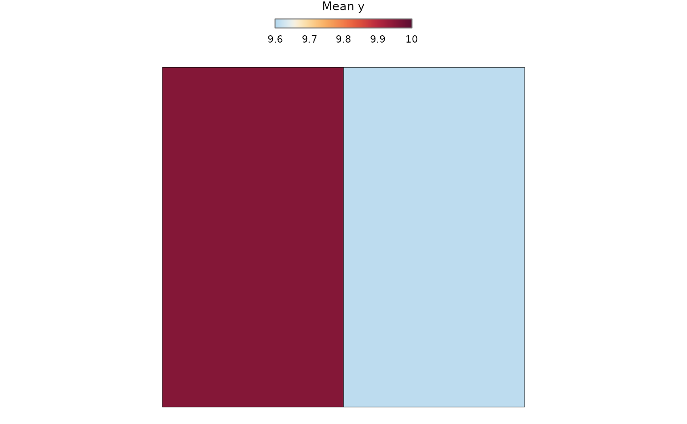
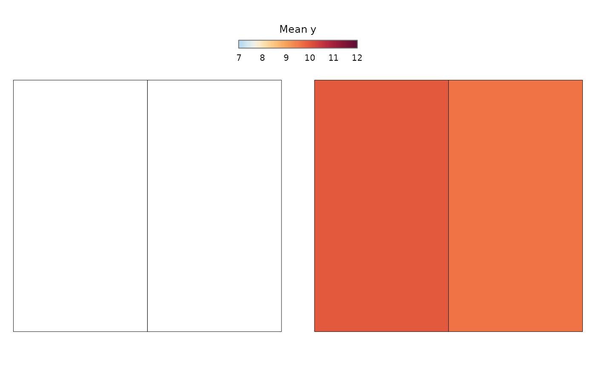

Draws a publication-ready map from the location-level or polygon-level
output returned by predict.RiskMap().
Arguments
- x
A
RiskMap_predictionobject.- quantity
Predictive quantity to display, such as
"response","spatial","link","fixed"(the fixed-effect contribution), or the name of a target supplied throughtransforminpredict.RiskMap(). Several quantities can be supplied, for examplec("fixed", "spatial"), and are arranged like several summaries. Supply several quantities or several summaries, not both.- summary
Summary to display, such as
"mean","median","lower","upper","sd","cv","interval_width", or"exceedance". WhenNULL(the default), the first summary requested inpredict.RiskMap()is shown. Several summaries can be supplied; they are then arranged in two columns, or one per row whenspatial_scale = "both". Ignored for"fixed"and"offset", which have a single value.- spatial_scale
Spatial scale to display.
"auto"(the default) shows the polygon summaries whenpredict.RiskMap()was givenboundaries, and the location-level predictions otherwise."location"and"area"select one scale, and"both"draws them side by side with a shared colour scale.- aggregate
Within-polygon aggregation to display at the area scale, such as
"mean"or"sum". WhenNULL, the first aggregation calculated is used.- threshold
For an exceedance map, the response-scale threshold to display. It may be omitted when only one threshold was calculated.
- palette
Colour palette.
NULLselects a default that depends on what the map shows: a calm-to-alarm sequential palette for predicted levels, a single-hue palette for uncertainty ("sd","cv","interval_width"), a blue-to-red palette centred at 0.5 for exceedance probabilities, and a palette centred at zero for signed effects such as"spatial"and"link". A character vector of colours or the name of an HCL palette accepted bygrDevices::hcl.colors()can be supplied. Prefix a named palette with"-"to reverse it, for example"-Viridis".- limits
Optional two-element numeric vector fixing the colour limits. By default, limits adapt to the values displayed. Supply the same limits when separate maps must be compared directly. Exceedance probabilities always use limits from 0 to 1.
- breaks
Optional increasing numeric vector of class boundaries. When supplied, values are shown in classes, for example programme thresholds such as
c(0, 0.05, 0.1, 0.2, 1).- north_arrow
Logical. Add a north arrow. Defaults to
FALSE.- scale_bar
Logical. Add a scale bar. Defaults to
FALSE.- ...
Additional arguments passed to the ggplot2 fill scale, for example
transform = "sqrt"for skewed values.
Value
A ggplot object. When several quantities or summaries are
requested, a patchwork object combining one ggplot per map.
Details
The legend title names the mapped quantity and is the only title. For
binomial models the response is labelled as prevalence and for Poisson
and negative binomial models as a rate. Probabilities are labelled as percentages. The title can
be replaced with labs(fill = ...).
Grid cells created by create_grid() are drawn as squares clipped to the
grid's study boundary, and the boundary itself is outlined. Maps are ordinary ggplot objects drawn with
ggplot2::geom_sf(), so further sf layers, such as survey locations,
can be added in any coordinate reference system.
When spatial_scale = "both", the two scales are drawn side by side,
locations first, and share one colour scale so that colours mean the same
in both panels. This requires an aggregation on
the same scale as the locations ("mean", "median", "min" or
"max").
Outlines of the boundaries supplied to predict.RiskMap() are drawn
automatically on location-level maps.
Examples
data(italy_sim)
example_data <- italy_sim[1:50, ]
fit <- glgpm(y ~ gp(), data = example_data, family = "gaussian",
messages = FALSE)
areas <- sf::st_sf(geometry = sf::st_make_grid(example_data, n = c(2, 1)))
prediction <- predict(fit, newdata = example_data, boundaries = areas,
aggregate = "mean", messages = FALSE)
#> Warning: The conditional prediction covariance of 2 of 2 blocks needed a diagonal
#> jitter, of up to 1e-12, to be factorised.
plot(prediction)

plot(prediction, spatial_scale = "both")
#> Warning: Removed 50 rows containing missing values or values outside the scale range
#> (`geom_sf()`).
